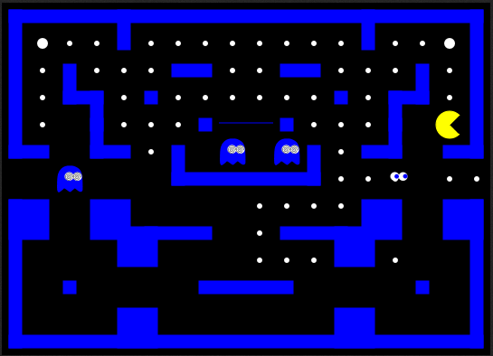
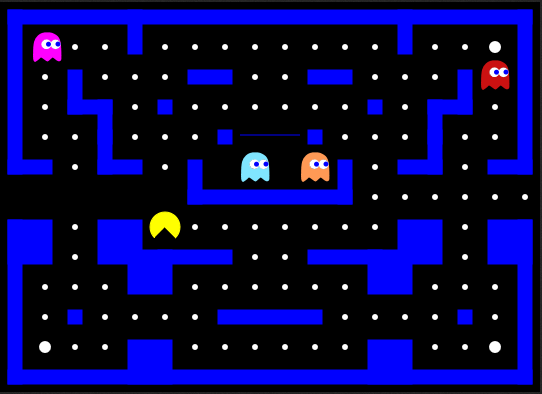
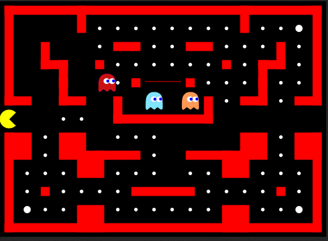

PAC-MAN
クリック・タップでスタート
▲
◀
▶
▼
このブラウザで遊んだ記録のトップ10です。
おばけにつかまらないように、迷路のエサ（白い点）をすべて食べるとステージクリア。ステージが進むほど難しくなります。
| 移動 | 矢印キー / W・A・S・D スマホ：スワイプ か 画面下のボタン |
|---|---|
| ポーズ / 再開 | スペース・P・Enter、または画面をクリック・タップ |
| 音のオン/オフ | M キー、または 🔇 ボタン |
| 新しいゲーム | N キー |
音は最初オフになっています。右上の 🔇 で切り替えできます。
| エサ | 10点 |
|---|---|
| パワーエサ（大きい点） | 50点。しばらくおばけが青くなり、食べられるようになります。 |
| 青いおばけ | 1匹目 200点 → 400 → 800 → 1600点と連続で倍になります。 |
| ボーナス | 10,000点で1回だけ残機が1つ増えます。 |

いちばん攻撃的。パックマンをまっすぐ追いかけてきます。
パックマンの進む先に回り込もうとします。
レベル3から登場。エサを30個食べると巣から出てきます。
レベル4から登場。エサが残り1/3になると出てきます。近づくと逃げる気まぐれ屋。
おばけはそれぞれの隅（なわばり）に向かいます。レベル1はずっとこのモードです。

レベル2から、時間がたつと壁が赤くなり、おばけがパックマンを追いかけてきます。

レベル5からはおばけのスピードが上がります。
HTML5 Canvas と JavaScript で作られたパックマン風ゲームです。
元のプログラムは platzh1rsch さんが作ったオープンソースの Pacman Canvas です。これを日本語化・改良しています。
ランキングはお使いのブラウザ内だけに保存されます。
今のゲームをやめて
最初からやり直しますか？